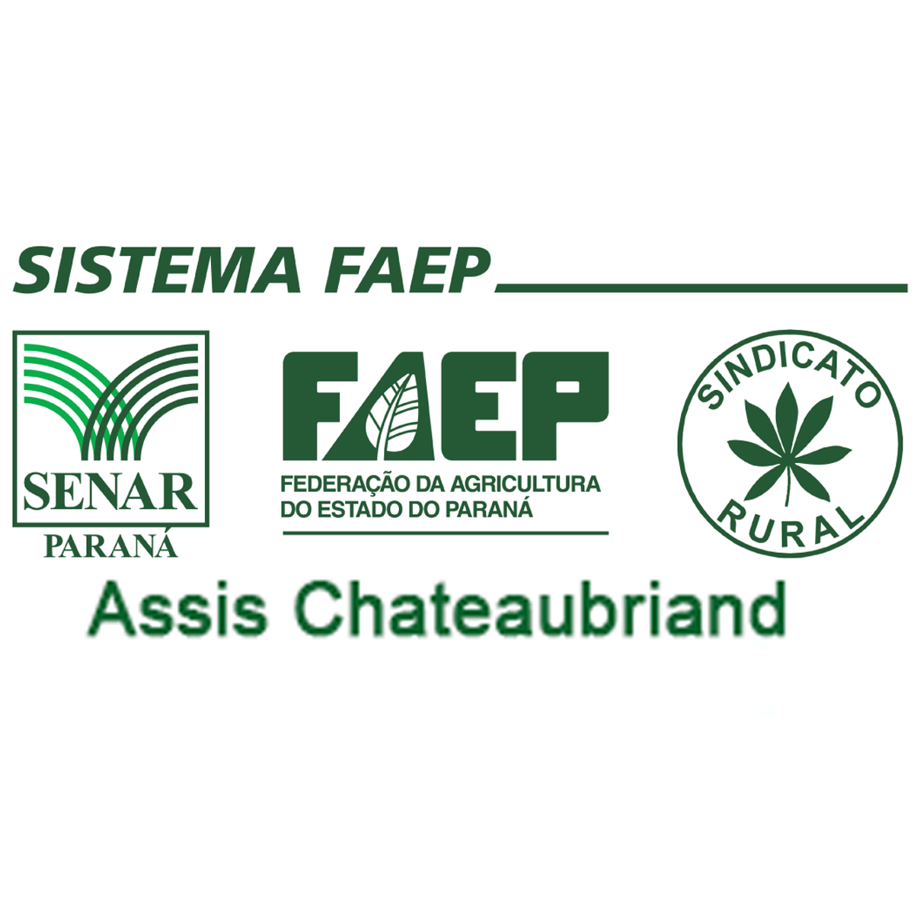

Projeto Agro Detector 2025
Agro Detector...
...
Desenvolvimento: Prof. Josiel e Equipe de Robótica Guima 2025
Apoiadores

Porque do Projeto
A Ideia
Como Funciona
Materiais
A Experiência
Créditos e Agradecimentos
×